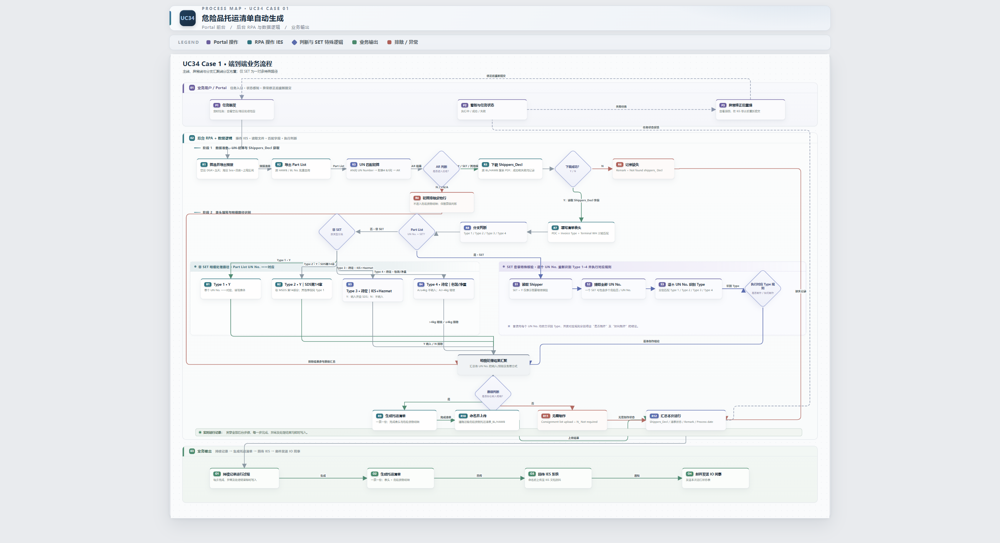

| 产物 | 路径 |
|---|---|
| 业务流程图（PNG） | images/业务流程图.png |
| 业务流程图（drawio 源文件） | docs/prd/Case1_危险品托运清单_业务流程图.drawio |

| 模块 | 交互原型（HTML） | 截图（PNG） | 状态 |
|---|---|---|---|
| 工作台 | index.html | home.png | 已确认 |
| 任务中心 | tasks.html | tasks.png | 已确认 |
| 任务详情 | task-detail.html | task-detail.png | 已确认 |
| 邮件中心 | rules.html | mail-center.png | 已确认 |
| 规则编辑 | rule-edit.html | rule-edit.png | 已确认 |
| 上传中心 | dim-tables.html | dim-tables.png | 已确认（Case1 范围为空） |
| 配置中心 | config.html | config.png | 已确认 |
| 提醒中心 | notify.html | notify.png | 已确认 |
| 权限中心 | rbac.html | rbac.png | 已确认（只读） |
| 治理运营台 | govern.html | govern.png | 已确认 |
| UC26 分析工作台 | uc26-query.html | uc26-query.png | 存档（Case1 范围外） |
| 后台 RPA 执行链（七节点） | 无 UI，以 PRD 业务规则章节（R1-R10）为准 | 原型缺口 | |